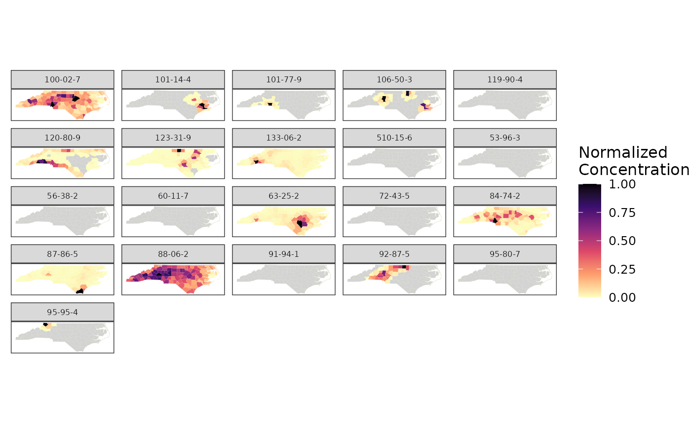
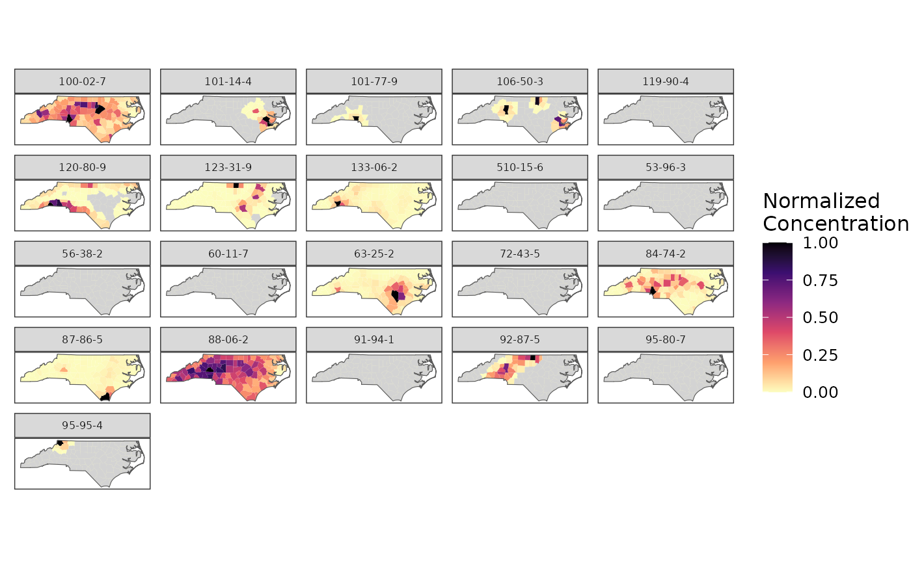

Plot exposure data.
Usage
plot_exposure(
exposure,
region_boundary,
group_boundary = NULL,
chem_label = "chnm",
ncol = 2
)Arguments
- exposure
list of exposure data named by region label.
- region_boundary
"sf" data.frame mapping features to a "geometry" column. Used to color regions.
- group_boundary
(optional) "sf" data.frame containing a "geometry" column. Used to draw outlines.
- chem_label
label for facet_wrap.
- ncol
number of columns to wrap.
Examples
# Load package data
exposure <- split(geo_tox_data$exposure, ~FIPS)
region_boundary <- geo_tox_data$boundaries$county
group_boundary <- geo_tox_data$boundaries$state
# Plot county exposure data
# Use CASN as label to avoid long chemical names
plot_exposure(exposure,
region_boundary,
chem_label = "casn",
ncol = 5)

# Add state boundaries
plot_exposure(exposure,
region_boundary,
group_boundary = group_boundary,
chem_label = "casn",
ncol = 5)
